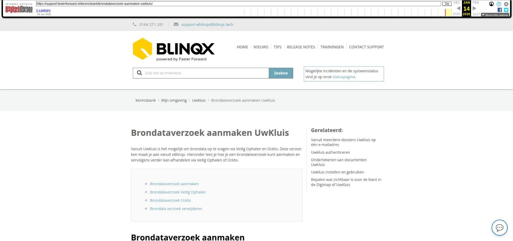

Brondataverzoek aanmaken UwKluis

Tekstinhoud
Brondataverzoek aanmaken UwKluis
Vanuit Uwkluis is het mogelijk om brondata op te vragen via Veilig Ophalen en Ockto. Deze verzoeken maak je aan vanuit eBlinqx. Hieronder lees je hoe je een brondataverzoek kunt aanmaken en vervolgens verder kan afhandelen via Veilig Ophalen of Ockto.
Brondataverzoek aanmaken
Brondataverzoek Veilig Ophalen
Brondataverzoek Ockto
Brondata verzoek verwijderen
Brondataverzoek aanmaken
Dit brondataverzoek verstuur je (meestal) onder de dienst vanuit de workflow. Bij het versturen van de activatiemail kan je er direct voor kiezen om ook het brondataverzoek via Veilig ophalen of Ockto op te starten. Ook is het mogelijk om deze later in de workflow op te starten. Na het klikken op de stap in de workflow komt er vervolgens in Uwkluis onder het tabblad Verzoeken een verzoek te staan.
De klant klikt op dit verzoek om de aanvraag van gegevens te starten.
Brondataverzoek Veilig Ophalen
Wanneer de klant op het verzoek heeft geklikt, krijgt de klant een QR code te zien. De QR code kan de klant met de Veilig Ophalen app scannen.
De klant doorloopt in app de stappen. De klant gaat in de app langs diverse bronnen om uiteindelijk te bepalen welke gegevens hij wilt delen met de adviseur.
Wanneer de klant in de app heeft gekozen voor ‘Gegevens delen’ dan komt in uwkluis zichtbaar dat de gegevens gedeeld zijn. Al deze gegevens worden samengevoegd tot één PDF bestand.
Dit PDF bestand komt ook in het klantdossier onder het tabblad Documenten in eBlinqx te staan. De opgehaalde gegevens kan je in combinatie met Fastlane en Adviesbox.
Let op: het is niet mogelijk om met één QR code zowel de gegevens van de eerste persoon als de partner op te halen. Iedere persoon dient zijn eigen QR code te scannen en zijn eigen gegevens op te halen. Via de workflow is het mogelijk om voor beide personen een aparte QR code klaar te zetten. Is dit nog niet zo ingericht, stuur dan een e-mail naar support-eblinqx@blinqx.tech.
Brondataverzoek Ockto
Wanneer de klant op het verzoek heeft geklikt, krijgt de klant een QR code te zien. Deze kan hij scannen met de Ockto app. Ook hier doorloopt de klant alle stappen in de app om vervolgens de gegevens naar de adviseur te versturen. Deze gegevens kunnen vervolgens vanuit eBlinqx naar het adviespakket worden verstuurd. Hier lees je meer over deze stappen.
Brondata verzoek verwijderen
In eBlinqx in het klantdossier wordt zichtbaar of er brondata verzoeken zijn gedaan. Dit onder het tabblad Export – Uwkluis. Ook zie je hier de status van het verzoek en indien gewenst kan je het verzoek verwijderen. Het verzoek wordt dan verwijderd uit Uwkluis. Indien het verzoek al is afgerond dan wordt het gegenereerde PDF bestand niet uit eBlinqx (onder het tabblad Documenten) verwijderd.
Laatste update: 7 november 2025
Was deze informatie nuttig?
Ja Nee